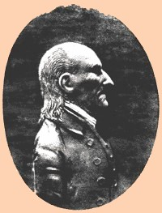
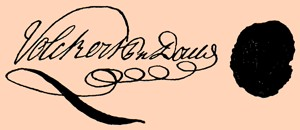

|
by Stefan Bielinski Volkert Petrus Douw was born in March 1720 and baptized in the Albany Dutch Church. He was the only surviving son among the nine children born to Petrus and Anna Van Rensselaer Douw.  He learned the family business growing up at Albany's busiest intersection and at the family farm located across the Hudson. At age twenty-two, he married young Anna De Peyster. Over the next eighteen years, she gave birth to nine children who were baptized in the nearby Dutch church where both parents were members and where Volkert became a prominent church officer. After some time as a skipper, "Captain" Volkert P. Douw was given the freedom of Albany in 1749 - thus qualifying the Rensselaerswyck native to conduct business in the chartered city. Under his father's guidance, Volkert tended the family store and sought opportunities for further advancement. By the 1750s, he had taken over for the aging Petrus and had become a fixture on the city council. He represented the first ward as an assistant and then alderman from 1748 to 1758. In that year he was appointed recorder of the city. In 1761, he was commissioned mayor of Albany and served until 1770. During the 1750s and 60s, Volkert P. Douw was among the most prominent of Albany personages.  City Father and churchman, he was a militia officer and served in the Seven Years War. He was a longtime judge and justice (1757-75), member of the provincial Assembly (1757-68), and Indian Commissioner. During the War for Independence, he served the American cause as a Rensselaerswyck member of the Albany Committee of Correspondence, delegate to the Provincial Congress, and as a commissioner and commissary to the Indians. His public standing was based on heritage but was greatly enhanced by the large fortune he amassed through trading, exporting, contract business, and land management. During his mayoral tenure, the Albany holdings alone identified him as among the city's wealthiest residents. His father died in 1775. By that time, fifty-five-year-old Volkert P. Douw had become patriarch of the Albany Douw family. His two unmarried sisters shared the family's substantial city home. Volkert relocated permanently to Wolvenhook - leaving the store and his other Albany business to the next generation. Douw augmented his country holdings - adding additional acreage especially to the east bank estate where, in 1790, his household was served by fourteen slaves.
In 1786, he was elected to the New York State Senate and served until 1793 when he retired. Volkert P. Douw died at Wolvenhook in March 1801. He was the most outstanding member of the Douw family during its first century and a half in America. This city father lived almost eighty-one years.
Likeness of Volkert P. Douw from a wax medallion owned by J. Townsend Lansing of Albany in 1904. Reproduced in Albany Chronicles, perhaps facing page 257. Signature and seal as reproduced in Johnson Papers, volume 3, viii. The riverfront house at Wolvenhook or "Wolves Point" probably was built by Petrus Douw and served as his residence until his death in 1775. For more information on the property, see Helen W. Reynolds, Dutch Houses in the Hudson Valley before 1776 (first published in 1928; reprinted 1965), 78-79, 139. first posted: 12/05/01 |